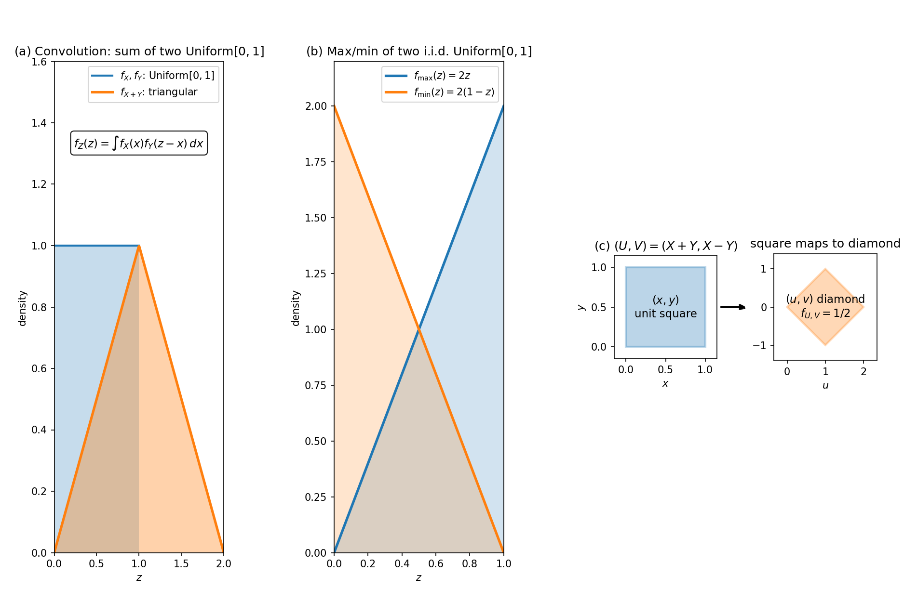

18. Joint continuous distributions
Chapter 17 built the full two-variable toolkit — joint PMF/PDF, marginals, conditionals, independence, \(E[g(X, Y)]\), covariance — but one question kept getting deferred: if you transform the pair, what is the distribution of the result? The discrete version was answered in §17.8 (pool the joint PMF over contours); this chapter does the continuous version. The three workhorses: the CDF method for \(Z = g(X, Y)\) (§18.2), convolution for sums of independent variables (§18.3), and the Jacobian method for invertible transformations (§18.5). Max/min via CDFs (§18.4) and the joint moment generating function (§18.6) round out the machinery. The one-variable CDF method (§16.10) is the special case everything here generalizes.
18.1 The continuous two-variable toolkit (recap)
Everything from §§17.12–17.14, in one place:
- Joint PDF (§17.12): \(P\big((X, Y) \in A\big) = \iint_A f_{X,Y}(x, y)\, dx\, dy\) for any region \(A\); \(f_{X,Y} \ge 0\); \(\iint_{\mathbb{R}^2} f_{X,Y} = 1\).
- Marginals (§17.13): \(f_X(x) = \int_{-\infty}^{\infty} f_{X,Y}(x, y)\, dy\) (integrate out \(y\)), and symmetrically for \(f_Y\).
- Conditionals (§17.14): \(f_{Y \mid X = x}(y) = f_{X,Y}(x, y)/f_X(x)\); the multiplication rule \(f_{X,Y}(x, y) = f_X(x)\,f_{Y \mid X = x}(y)\).
- Independence (§17.5, continuous form): \(X, Y\) independent iff \(f_{X,Y}(x, y) = f_X(x)\,f_Y(y)\) for all \((x, y)\) — and the support is a product set (a factorizing density on a non-rectangular support is not independent; §17.13’s Note).
Two formulas that were stated for the discrete case lift to integrals:
Def (continuous two-variable LOTUS). For \(Z = g(X, Y)\), \[\boxed{E[g(X, Y)] = \int_{-\infty}^{\infty}\!\!\int_{-\infty}^{\infty} g(x, y)\, f_{X,Y}(x, y)\, dx\, dy}\] — §17.7 with sums replaced by integrals. The covariance formula is unchanged in shape: \(\mathrm{Cov}(X, Y) = E[XY] - E[X]E[Y]\) (§17.9), computed with this integral.
Basically, … Same toolkit as Chapter 17, sums swapped for integrals: the joint PDF spreads probability over regions, marginals come from integrating out, conditionals from dividing, independence from the product test. The one new formula here is continuous LOTUS — average \(g(x, y)\) against the joint density, no need to find \(g\)’s distribution first.
18.2 The CDF method for \(Z = g(X, Y)\)
§17.8 pooled the joint PMF over the contours \(\{g(x, y) = z\}\). The continuous version pools probability mass over the region \(\{g(x, y) \le z\}\) — the CDF method (§16.10), now in two dimensions:
Recipe. For \(Z = g(X, Y)\): \[\boxed{F_Z(z) = P\big(g(X, Y) \le z\big) = \iint_{\{(x,y):\, g(x,y) \le z\}} f_{X,Y}(x, y)\, dx\, dy}, \qquad f_Z(z) = F_Z'(z).\]
- Sketch the region \(\{(x, y) : g(x, y) \le z\}\) and intersect it with the support of \(f_{X,Y}\) — the picture dictates the integral’s limits.
- Integrate, then differentiate with respect to \(z\) (Leibniz rule lets the derivative pass inside when the limits are constant).
- If \((X, Y)\) is uniform on a region \(D\), the integral collapses to an area ratio: \(P\big((X, Y) \in A\big) = |A|/|D|\) (the Stats 2 deck’s §3.1).
eg 1 (the deck’s 2-D uniform triangle). Let \((X, Y) \sim \mathrm{Uniform}(D)\) with \(D = \{(x, y) : x + y < 2,\ x > 0,\ y > 0\}\) — a right triangle with legs \(2\), area \(|D| = 2\), so \(f_{X,Y}(x, y) = 1/2\) on \(D\).
\(P(X + Y < 1)\): the region \(A = \{(x, y) : x + y < 1,\ x > 0,\ y > 0\}\) is a triangle with legs \(1\), area \(|A| = 1/2\). By the area ratio, \[\boxed{P(X + Y < 1) = \frac{|A|}{|D|} = \frac{1/2}{2} = \frac{1}{4}}.\] The same via integration (the deck’s “Method 2” — \(y\) runs \(0\) to \(1 - x\), \(x\) runs \(0\) to \(1\)): \[P(X + Y < 1) = \int_0^1\!\!\int_0^{\,1-x} \frac{1}{2}\, dy\, dx = \frac{1}{2}\int_0^1 (1 - x)\, dx = \frac{1}{2}\cdot\frac{1}{2} = \boxed{\frac{1}{4}} \text{ ✓}.\]
\(P(X + 2Y > 1)\): work with the complement inside \(D\). The set \(\{x + 2y < 1,\ x > 0,\ y > 0\}\) is a triangle with \(x\)-intercept \(1\) and \(y\)-intercept \(1/2\), area \(\frac{1}{2}\cdot 1 \cdot \frac{1}{2} = 1/4\). So \[P(X + 2Y > 1) = \frac{|D| - 1/4}{|D|} = \frac{2 - 1/4}{2} = \boxed{\frac{7}{8}}.\]
eg 2 (the deck’s \(f_{X,Y}(x, y) = x + y\)). On the unit square, \(f_{X,Y}(x, y) = x + y\) (\(0 < x, y < 1\)). Valid density: \(\int_0^1\!\!\int_0^1 (x + y)\, dy\, dx = \int_0^1 (x + 1/2)\, dx = 1\) ✓.
\(P(X < 1/2,\ Y < 1/2)\): integrate over the quarter square — \[\int_0^{1/2}\!\!\int_0^{1/2} (x + y)\, dy\, dx = \int_0^{1/2}\!\left(\frac{x}{2} + \frac{1}{8}\right)dx = \left[\frac{x^2}{4} + \frac{x}{8}\right]_0^{1/2} = \frac{1}{16} + \frac{1}{16} = \boxed{\frac{1}{8}}.\] (Note: the deck’s printed answer \(3/16\) integrates \(x/2\) to \(x^2/2\) instead of \(x^2/4\) — an arithmetic slip; \(1/8\) is correct. Logged in the review.)
\(P(X + Y < 1)\): the region is \(0 < x < 1\), \(0 < y < 1 - x\) — \[\int_0^1\!\!\int_0^{\,1-x} (x + y)\, dy\, dx = \int_0^1\!\left(x(1 - x) + \frac{(1-x)^2}{2}\right)dx = \int_0^1\!\left(\frac{1}{2} - \frac{x^2}{2}\right)dx = \boxed{\frac{1}{3}}.\]
Basically, … The CDF method in 2-D = “shade the region where \(g(x, y) \le z\), integrate the joint density over it, differentiate”. Drawing the region is the whole battle — once the limits are right, the rest is bookkeeping. For uniform joints, shading is the answer: probability = shaded area \(\div\) total area.
18.3 Convolution: the distribution of a sum
The most-used \(g(X, Y)\) is the sum. Let \(X, Y\) be independent continuous variables with PDFs \(f_X, f_Y\), and \(Z = X + Y\). Apply the CDF method (§18.2): the region \(\{x + y \le z\}\) is everything below the line \(y = z - x\), so \[\begin{aligned} F_Z(z) &= P(X + Y \le z) = \int_{-\infty}^{\infty}\!\!\int_{-\infty}^{\,z-x} f_X(x)\,f_Y(y)\, dy\, dx \\ &= \int_{-\infty}^{\infty} F_Y(z - x)\, f_X(x)\, dx \qquad \text{(independence: joint = product)}. \end{aligned}\] Differentiating under the integral (the limits are constant): \[\boxed{f_Z(z) = \int_{-\infty}^{\infty} f_X(x)\, f_Y(z - x)\, dx = (f_X * f_Y)(z)}.\] This is the convolution of \(f_X\) and \(f_Y\), written \(f_X * f_Y\). Sliding-window reading: fix \(z\); as \(x\) runs over \(X\)’s range, \(f_Y(z - x)\) is \(Y\)’s density shifted to sit at \(z - x\); the integral multiplies the two densities at every split of \(z\) into \(x + (z - x)\) and adds them up — exactly §17.8’s contour pooling, made continuous.
- Symmetry: \(f_Z(z) = \int_{-\infty}^{\infty} f_X(z - y)\, f_Y(y)\, dy\) — convolve in whichever order is easier.
- Discrete twin (VOL1 deck §2.3.4; §17.8’s contour version): \(f_Z(z) = \sum_x f_X(x)\,f_Y(z - x)\).
- Three or more: convolution is associative — \(f_{X+Y+Z} = (f_X * f_Y) * f_Z\). Add variables two at a time.
eg 3 (sum of two i.i.d. \(\mathrm{Uniform}[0, 1]\) — the continuous twin of §17.8’s eg 11). \(f_X = f_Y = 1\) on \((0, 1)\). The integrand is \(1\) exactly when \(0 < x < 1\) and \(0 < z - x < 1\), i.e. \(x \in (0, 1) \cap (z - 1, z)\):
- for \(0 < z < 1\): the overlap is \((0, z)\), so \(f_Z(z) = \int_0^z 1\, dx = \boxed{z}\);
- for \(1 \le z < 2\): the overlap is \((z - 1, 1)\), so \(f_Z(z) = \int_{z-1}^1 1\, dx = \boxed{2 - z}\);
- \(0\) elsewhere.
\[\boxed{f_{X+Y}(z) = \begin{cases} z & 0 < z < 1, \\ 2 - z & 1 \le z < 2, \\ 0 & \text{otherwise}. \end{cases}}\] The triangular distribution — panel (a) of the figure. Middle sums have more \((x, y)\) splits landing on them, so the density ramps up then down. Same moral as the discrete eg 11: sums of uniforms are not uniform.
eg 4 (sum of two i.i.d. \(\mathrm{Exp}(\lambda)\)). \(f_X(x) = \lambda e^{-\lambda x}\) for \(x > 0\) (§16.8). For \(z > 0\), the overlap of \((0, \infty)\) with \((-\infty, z)\) is \((0, z)\): \[f_Z(z) = \int_0^z \lambda e^{-\lambda x}\,\lambda e^{-\lambda(z - x)}\, dx = \lambda^2 e^{-\lambda z}\int_0^z dx = \boxed{\lambda^2 z\, e^{-\lambda z}}, \qquad z > 0.\] This is the Gamma\((2, \lambda)\) (Erlang-2) density: the waiting time for two arrivals when arrivals come at rate \(\lambda\). Sanity check via LOTUS (§18.1): \(E[Z] = E[X] + E[Y] = 2/\lambda\) (§17.7), and \(\int_0^{\infty} z\cdot\lambda^2 z e^{-\lambda z}\, dz = \frac{1}{\lambda}\int_0^{\infty} t^2 e^{-t}\, dt = 2/\lambda\) ✓.
eg 5 (discrete convolution: sum of independent Poissons). \(X \sim \mathrm{Poisson}(\lambda_1)\), \(Y \sim \mathrm{Poisson}(\lambda_2)\), independent (§15.15). For \(z = 0, 1, 2, \dots\), the discrete convolution (item ii)) sums over the splits \(k + (z - k) = z\): \[\begin{aligned} f_Z(z) &= \sum_{k=0}^{z} \frac{e^{-\lambda_1}\,\lambda_1^k}{k!}\cdot\frac{e^{-\lambda_2}\,\lambda_2^{\,z-k}}{(z-k)!} \\ &= \frac{e^{-(\lambda_1+\lambda_2)}}{z!}\sum_{k=0}^{z}\frac{z!}{k!\,(z-k)!}\,\lambda_1^k\,\lambda_2^{\,z-k} \\ &= \frac{e^{-(\lambda_1+\lambda_2)}}{z!}\sum_{k=0}^{z}\binom{z}{k}\lambda_1^k\,\lambda_2^{\,z-k} = \boxed{\frac{e^{-(\lambda_1+\lambda_2)}\,(\lambda_1+\lambda_2)^z}{z!}}, \end{aligned}\] by the binomial theorem (§15.12). So \(\boxed{X + Y \sim \mathrm{Poisson}(\lambda_1 + \lambda_2)}\) — independent Poisson counts add their rates, exactly as independent exponential waiting times convolve to a Gamma (eg 4).
Basically, … The PDF of a sum of independent variables = convolution: “for each way of splitting \(z\) into \(x + y\), multiply the two densities, and add over all splits”. Two uniforms give a triangle (peaks in the middle), two exponentials give a Gamma (the two-arrival waiting time). Whenever you see “total of independent waiting times / errors / measurements”, think convolution.
18.4 Max and min of independent variables
For \(M = \max(X, Y)\) and \(m = \min(X, Y)\) with \(X, Y\) independent, the CDF method (§18.2) collapses beautifully — no integrals needed:
\[\boxed{F_M(z) = P(M \le z) = P(X \le z)\,P(Y \le z) = F_X(z)\,F_Y(z)}\] (the max is small iff both are small), and \[\boxed{F_m(z) = 1 - P(m > z) = 1 - P(X > z)\,P(Y > z) = 1 - \big(1 - F_X(z)\big)\big(1 - F_Y(z)\big)}\] (the min is large iff both are large). For \(n\) independent variables: \(F_{\max} = \prod_i F_{X_i}\), \(F_{\min} = 1 - \prod_i (1 - F_{X_i})\). Differentiate for the PDFs.
eg 6 (\(\max\) and \(\min\) of i.i.d. \(\mathrm{Uniform}[0, 1]\)). \(F_X(z) = z\) on \((0, 1)\) (§16.7): \[F_M(z) = z^2, \quad \boxed{f_M(z) = 2z},\qquad F_m(z) = 1 - (1 - z)^2 = 2z - z^2, \quad \boxed{f_m(z) = 2(1 - z)},\] \(0 < z < 1\) — panel (b) of the figure. The max piles up near \(1\), the min near \(0\), exactly as intuition says. For \(n\) i.i.d. uniforms: \(f_{\max}(z) = nz^{n-1}\), \(f_{\min}(z) = n(1-z)^{n-1}\).
eg 7 (\(\min\) of independent exponentials — competing clocks). \(X \sim \mathrm{Exp}(\lambda_1)\), \(Y \sim \mathrm{Exp}(\lambda_2)\) independent (§16.8: \(P(X > z) = e^{-\lambda_1 z}\)). Then \[P\big(\min(X, Y) > z\big) = e^{-\lambda_1 z}\,e^{-\lambda_2 z} = e^{-(\lambda_1 + \lambda_2)z},\] so \(\boxed{\min(X, Y) \sim \mathrm{Exp}(\lambda_1 + \lambda_2)}\) — the minimum of independent exponentials is exponential with the summed rate. Two components in series fail at the combined rate; two competing clocks ring at the combined rate.
eg 8 (the deck’s \(P(X > Y)\)). Same setup as eg 7. Integrate over \(\{y < x\}\): \[\begin{aligned} P(X > Y) &= \int_0^{\infty}\!\!\int_0^x \lambda_1 e^{-\lambda_1 x}\,\lambda_2 e^{-\lambda_2 y}\, dy\, dx \\ &= \int_0^{\infty} \lambda_1 e^{-\lambda_1 x}\big(1 - e^{-\lambda_2 x}\big)\, dx = 1 - \frac{\lambda_1}{\lambda_1 + \lambda_2} = \boxed{\frac{\lambda_2}{\lambda_1 + \lambda_2}}. \end{aligned}\] Each clock’s chance of ringing second is its rate’s share of the total rate — the memoryless property (§16.8) makes the race fair at every instant.
Note (reliability reading). Max = parallel system (works while any component works — the last failure kills it); min = series system (fails at the first failure). These two CDF formulas are the whole of two-component reliability theory.
Basically, … Max and min of independent variables need no integration: the max’s CDF is the product of the CDFs (both must be small), the min’s CDF is one minus the product of the survival functions (both must be large). Exponentials are the showcase: the minimum of competing exponential clocks is exponential at the summed rate.
18.5 The Jacobian method: transforming two variables
§18.2’s CDF method always works but can be painful. When \((U, V) = \big(g_1(X, Y), g_2(X, Y)\big)\) is invertible with smooth partials, the Jacobian method gives the joint PDF directly — the 2-D upgrade of §16.10’s monotone formula.
Theorem (change of variables). Let \(g\) be one-to-one on the support of \((X, Y)\), with continuous partial derivatives and nonzero Jacobian determinant \[J = \frac{\partial(u, v)}{\partial(x, y)} = \det\begin{pmatrix} \partial u/\partial x & \partial u/\partial y \\ \partial v/\partial x & \partial v/\partial y \end{pmatrix} \ne 0.\] Write the inverse as \((x, y) = h(u, v) = \big(h_1(u, v), h_2(u, v)\big)\). Then \[\boxed{f_{U,V}(u, v) = f_{X,Y}\big(h_1(u, v),\, h_2(u, v)\big)\;\left|\frac{\partial(x, y)}{\partial(u, v)}\right|}\] on the transformed support, \(0\) elsewhere.
Why the extra factor. A small rectangle of area \(du\,dv\) at \((u, v)\) is the image of a small parallelogram of area \(\left|\partial(x, y)/\partial(u, v)\right|\,du\,dv\) at \((x, y)\) — the Jacobian determinant is the local area-distortion factor (§9.7). Probability mass is conserved, so the density rescales by exactly that factor. In 1-D, \(\left|d\,g^{-1}/dy\right|\) (§16.10) is the same idea with lengths instead of areas.
Steps. i) Solve for \(x, y\) in terms of \(u, v\) (the inverse map). ii) Compute the Jacobian determinant of the inverse and take \(| \cdot |\). iii) Substitute into \(f_{X,Y}\) and multiply by \(|J_{\text{inv}}|\). iv) Transform the support: push the \((x, y)\) inequalities through the inverse. (For linear \(g\), \(|J_{\text{inv}}|\) is constant — the easy case.)
eg 9 (linear: \(U = X + Y\), \(V = X - Y\)). \(X, Y \stackrel{\text{i.i.d.}}{\sim} \mathrm{Uniform}[0, 1]\). Invert: \(x = (u+v)/2\), \(y = (u-v)/2\). \[\frac{\partial(x, y)}{\partial(u, v)} = \det\begin{pmatrix} 1/2 & 1/2 \\ 1/2 & -1/2 \end{pmatrix} = -\frac{1}{4} - \frac{1}{4} = -\frac{1}{2}, \qquad \left|J_{\text{inv}}\right| = \frac{1}{2}.\] Support: \(0 < x < 1\), \(0 < y < 1\) becomes \(0 < u+v < 2\), \(0 < u-v < 2\) — i.e. \(0 < u < 2\) and \(|v| < \min(u, 2 - u)\), a diamond (panel (c) of the figure). Hence \[\boxed{f_{U,V}(u, v) = 1\cdot\frac{1}{2} = \frac{1}{2}} \quad \text{on the diamond}\] (check: diamond area \(= 2\), so it integrates to \(1\) ✓). The marginal of \(U\): \[f_U(u) = \int_{-\min(u,2-u)}^{\min(u,2-u)} \frac{1}{2}\, dv = \min(u, 2 - u) = \begin{cases} u & 0 < u < 1, \\ 2 - u & 1 \le u < 2, \end{cases}\] exactly the triangular density from §18.3’s convolution — two methods, one answer.
eg 10 (nonlinear classic: sum and proportion of exponentials). \(X, Y \stackrel{\text{i.i.d.}}{\sim} \mathrm{Exp}(1)\); \(U = X + Y\), \(V = X/(X + Y)\). Invert: \(x = uv\), \(y = u(1 - v)\). \[\frac{\partial(x, y)}{\partial(u, v)} = \det\begin{pmatrix} v & u \\ 1 - v & -u \end{pmatrix} = -uv - u(1-v) = -u, \qquad \left|J_{\text{inv}}\right| = u.\] Support: \(x > 0\), \(y > 0\) becomes \(u > 0\), \(0 < v < 1\). Now \[f_{U,V}(u, v) = \underbrace{e^{-uv}\,e^{-u(1-v)}}_{f_{X,Y}}\cdot u = u\,e^{-u} = \big[u e^{-u}\,\mathbf{1}_{\{u>0\}}\big]\cdot\big[1\cdot\mathbf{1}_{\{0<v<1\}}\big].\] It factors: \(\boxed{U \perp V}\), with \(V \sim \mathrm{Uniform}[0, 1]\) and \(f_U(u) = u e^{-u}\) on \(u > 0\) — which is §18.3’s eg 4 density at \(\lambda = 1\) (Gamma\((2,1)\)) ✓, a second cross-check between convolution and Jacobian. The sum and the proportion are independent: knowing the total tells you nothing about the split.
Basically, … The Jacobian method = “substitute the inverse into the joint density, then multiply by the area-stretch factor \(| \partial(x,y)/\partial(u,v) |\)”. Always transform the support too — most mistakes happen there, not in the determinant. And when the transformed joint factors, you’ve discovered an independence (§17.5) hiding inside the transformation, like eg 10’s sum-vs-proportion.
18.6 The joint moment generating function
A compact encoding of the joint distribution, and a second route to sums:
Def. The joint MGF of \((X, Y)\) is \[\boxed{M_{X,Y}(s, t) = E\big[e^{sX + tY}\big]},\] wherever the expectation exists.
- Marginals fall out: \(M_X(s) = M_{X,Y}(s, 0)\), \(M_Y(t) = M_{X,Y}(0, t)\).
- Independence test: \(X \perp Y\) iff \(M_{X,Y}(s, t) = M_X(s)\,M_Y(t)\) (for MGFs existing near \(0\)).
- Sums without integrating. For independent \(X, Y\), \[\boxed{M_{X+Y}(s) = M_X(s)\,M_Y(s)}\] since \(E\big[e^{s(X+Y)}\big] = E\big[e^{sX}e^{sY}\big] = E[e^{sX}]\,E[e^{sY}]\) by independence (§17.5). Convolution (§18.3) does the sum in density space; the MGF does it in one line of algebra.
eg 11 (sum of independent normals). For \(X \sim \mathrm{Normal}(\mu_1, \sigma_1^2)\), \(M_X(s) = e^{\mu_1 s + \sigma_1^2 s^2/2}\) (standard formula), and similarly for \(Y\). If \(X \perp Y\), \[M_{X+Y}(s) = e^{\mu_1 s + \sigma_1^2 s^2/2}\,e^{\mu_2 s + \sigma_2^2 s^2/2} = e^{(\mu_1+\mu_2)s + (\sigma_1^2+\sigma_2^2)s^2/2},\] which is the MGF of \(\mathrm{Normal}(\mu_1 + \mu_2,\ \sigma_1^2 + \sigma_2^2)\) — so by MGF uniqueness (quoted as a fact), \[\boxed{X + Y \sim \mathrm{Normal}(\mu_1 + \mu_2,\ \sigma_1^2 + \sigma_2^2)} \qquad \text{(independent } X, Y\text{)}.\] Means add, variances add (§17.11’s corollary, now as a distribution statement). The normal family is closed under independent sums — the fact Chapter 21’s central limit theorem will lean on. (The full multivariate normal, where the covariance becomes a matrix, is Chapter 19.)
Basically, … The joint MGF packs the whole joint distribution into one function \(E[e^{sX+tY}]\). Its killer feature: for independent variables, the MGF of a sum is the product of the MGFs — no convolution integral needed. Identify the product, and you’ve identified the sum’s distribution (as with the normals above).
18.7 Why this matters: the two-variable machine
- Sums are everywhere. Total noise, total waiting time, accumulated error — convolution (§18.3) and the MGF product (§18.6) are the two ways to get a sum’s distribution. Chapter 21’s CLT is the limit of this idea as the number of summands grows.
- Extremes are cheap. Max/min need only CDFs (§18.4) — no integrals at all. Reliability (series vs parallel), best/worst-case analysis, and the order statistics behind quantiles all start here.
- The Jacobian is the general engine. Any invertible transformation of the pair goes through §18.5; the linear case (constant Jacobian) is exactly what Chapter 19’s multivariate normal needs for affine transformations.
- What comes next. Chapter 19 builds the multivariate normal (covariance as a matrix, §17.9 at scale); Chapter 20 estimates these joint models from data (MLE); Chapter 21 explains why sums keep turning normal.
Problem set
- (2-D uniform triangle — the deck’s Q1) \((X, Y) \sim \mathrm{Uniform}(D)\), \(D = \{(x, y) : x + y < 2,\ x > 0,\ y > 0\}\). Find (a) \(P(X + Y < 1)\), (b) \(P(X + 2Y > 1)\).
- (Region integration — the deck’s Q2) \(f_{X,Y}(x, y) = x + y\) for \(0 < x, y < 1\) (\(0\) otherwise). (a) Verify it is a valid joint density. (b) Find \(P(X < 1/2,\ Y < 1/2)\). (c) Find \(P(X + Y < 1)\).
- (Marginals — the deck’s 3.5 Q3) \(f_{X,Y}(x, y) = \frac{6}{5}(x + y^2)\) for \(0 < x, y < 1\) (\(0\) otherwise). (a) Find \(f_X\) and \(f_Y\). (b) Are \(X\) and \(Y\) independent?
- (Uniform marginals, dependent joint — the deck’s §3.2 Q2) \((X, Y)\) is uniform on \(D = [0, \tfrac{1}{2}]^2 \cup [\tfrac{1}{2}, 1]^2\). (a) Find the marginal densities of \(X\) and \(Y\). (b) Are \(X\) and \(Y\) independent?
- (Convolution: uniforms) \(X, Y \stackrel{\text{i.i.d.}}{\sim} \mathrm{Uniform}[0, 1]\). Find the PDF of \(Z = X + Y\).
- (Convolution: exponentials) \(X, Y \stackrel{\text{i.i.d.}}{\sim} \mathrm{Exp}(\lambda)\). Find the PDF of \(Z = X + Y\).
- (Max and min) \(X, Y \stackrel{\text{i.i.d.}}{\sim} \mathrm{Uniform}[0, 1]\). Find the PDFs of \(\max(X, Y)\) and \(\min(X, Y)\).
- (Min of exponentials) \(X \sim \mathrm{Exp}(\lambda_1)\), \(Y \sim \mathrm{Exp}(\lambda_2)\), independent. (a) Find the distribution of \(\min(X, Y)\). (b) Find \(P(X > Y)\).
- (Jacobian) \(X, Y \stackrel{\text{i.i.d.}}{\sim} \mathrm{Uniform}[0, 1]\); \(U = X + Y\), \(V = X - Y\). (a) Find \(f_{U,V}\). (b) Find the marginal PDF of \(U\) and compare with Problem 5.
- (MGF of a sum) \(X \sim \mathrm{Normal}(\mu_1, \sigma_1^2)\), \(Y \sim \mathrm{Normal}(\mu_2, \sigma_2^2)\), independent. Use MGFs to find the distribution of \(X + Y\).

Solutions
Attempt each problem first, then click a problem to reveal its worked solution.
1. (2-D uniform triangle — the deck’s Q1) \(D\) is the right triangle with vertices \((0,0), (2,0), (0,2)\); \(|D| = \frac{1}{2}\cdot 2\cdot 2 = 2\), so \(f_{X,Y}(x,y) = 1/2\) on \(D\) (§18.2).
\(A = \{x + y < 1,\ x > 0,\ y > 0\}\) is a triangle with legs \(1\): \(|A| = 1/2\). By the area ratio, \[\boxed{P(X + Y < 1) = \frac{1/2}{2} = \frac{1}{4}}.\]
The complement inside \(D\): \(\{x + 2y < 1,\ x > 0,\ y > 0\}\) is a triangle with \(x\)-intercept \(1\) and \(y\)-intercept \(1/2\), area \(\frac{1}{2}\cdot 1\cdot\frac{1}{2} = 1/4\). Hence \[\boxed{P(X + 2Y > 1) = \frac{2 - 1/4}{2} = \frac{7/4}{2} = \frac{7}{8}}.\]
2. (Region integration — the deck’s Q2) (a) Non-negative on the unit square ✓, and \[\int_0^1\!\!\int_0^1 (x + y)\,dy\,dx = \int_0^1\!\left(x + \tfrac{1}{2}\right)dx = \tfrac{1}{2} + \tfrac{1}{2} = \boxed{1} \text{ ✓},\] so it is a valid joint density (§18.2, eg 2).
\[P(X < \tfrac{1}{2},\, Y < \tfrac{1}{2}) = \int_0^{1/2}\!\!\int_0^{1/2}(x+y)\,dy\,dx = \int_0^{1/2}\!\left(\tfrac{x}{2}+\tfrac{1}{8}\right)dx = \left[\tfrac{x^2}{4}+\tfrac{x}{8}\right]_0^{1/2} = \tfrac{1}{16}+\tfrac{1}{16} = \boxed{\tfrac{1}{8}}.\] (The deck prints \(3/16\), integrating \(x/2\) to \(x^2/2\) instead of \(x^2/4\) — an arithmetic slip; \(1/8\) is correct.)
The region \(\{x + y < 1\}\cap[0,1]^2\): \(0 < x < 1\), \(0 < y < 1 - x\): \[\begin{aligned} P(X + Y < 1) &= \int_0^1\!\!\int_0^{\,1-x}(x+y)\,dy\,dx = \int_0^1\!\left(x(1-x)+\tfrac{(1-x)^2}{2}\right)dx \\ &= \int_0^1\!\left(\tfrac{1}{2}-\tfrac{x^2}{2}\right)dx = \tfrac{1}{2}-\tfrac{1}{6} = \boxed{\tfrac{1}{3}}. \end{aligned}\]
3. (Marginals — the deck’s 3.5 Q3) (a) Integrating out (§17.13): \[f_X(x) = \int_0^1 \tfrac{6}{5}(x+y^2)\,dy = \tfrac{6}{5}\left[x + \tfrac{1}{3}\right], \qquad \boxed{f_X(x) = \tfrac{6}{5}\!\left(x + \tfrac{1}{3}\right)},\ 0 < x < 1,\] \[f_Y(y) = \int_0^1 \tfrac{6}{5}(x+y^2)\,dx = \tfrac{6}{5}\left[\tfrac{1}{2} + y^2\right], \qquad \boxed{f_Y(y) = \tfrac{6}{5}\!\left(\tfrac{1}{2} + y^2\right)},\ 0 < y < 1.\] Check: \(\int_0^1 \frac{6}{5}(x + 1/3)\,dx = \frac{6}{5}(1/2 + 1/3) = 1\) ✓; \(\int_0^1 \frac{6}{5}(1/2 + y^2)\,dy = \frac{6}{5}(1/2 + 1/3) = 1\) ✓.
- Independence test (§17.5): at \((0, 0)\), \(f_{X,Y}(0,0) = 0\) but \(f_X(0)\,f_Y(0) = \frac{6}{5}\cdot\frac{1}{3}\cdot\frac{6}{5}\cdot\frac{1}{2} = \frac{6}{25} \ne 0\). \(\boxed{\text{Not independent}.}\)
4. (Uniform marginals, dependent joint — the deck’s §3.2 Q2) \(|D| = \frac{1}{4} + \frac{1}{4} = \frac{1}{2}\), so \(f_{X,Y} = 2\) on \(D\) (the deck’s §3.1).
For \(0 < x < \frac{1}{2}\): \(f_X(x) = \int_0^{1/2} 2\,dy = 1\). For \(\frac{1}{2} < x < 1\): \(f_X(x) = \int_{1/2}^1 2\,dy = 1\). So \(\boxed{f_X(x) = 1,\ 0 < x < 1}\): \(X \sim \mathrm{Uniform}[0,1]\). By symmetry, \(\boxed{f_Y(y) = 1,\ 0 < y < 1}\): \(Y \sim \mathrm{Uniform}[0,1]\).
Zero-cell test (§17.5): \(f_{X,Y}(1/4,\,3/4) = 0\) (off the diagonal squares), while \(f_X(1/4)\,f_Y(3/4) = 1\cdot 1 = 1 \ne 0\). \(\boxed{\text{Not independent}}\) — uniform marginals do not imply a uniform (independent) joint.
5. (Convolution: uniforms) §18.3, eg 3. With \(f_X = f_Y = \mathbf{1}_{(0,1)}\), \[f_Z(z) = \int_{-\infty}^{\infty} f_X(x)\,f_Y(z-x)\,dx,\] the integrand is \(1\) on \(x \in (0,1)\cap(z-1,z)\). For \(0 < z < 1\) the overlap is \((0,z)\): \(f_Z(z) = z\). For \(1 \le z < 2\) the overlap is \((z-1,1)\): \(f_Z(z) = 2 - z\). Hence \[\boxed{f_Z(z) = \begin{cases} z & 0 < z < 1, \\ 2 - z & 1 \le z < 2, \\ 0 & \text{otherwise}, \end{cases}}\] the triangular distribution — panel (a) of the figure.
6. (Convolution: exponentials) §18.3, eg 4. For \(z > 0\): \[f_Z(z) = \int_0^z \lambda e^{-\lambda x}\,\lambda e^{-\lambda(z-x)}\,dx = \lambda^2 e^{-\lambda z}\int_0^z dx = \boxed{\lambda^2 z\,e^{-\lambda z}},\qquad z > 0\] (\(0\) for \(z \le 0\)): the Gamma\((2,\lambda)\) density. Check the mean: \(E[Z] = \int_0^\infty \lambda^2 z^2 e^{-\lambda z}\,dz = \frac{1}{\lambda}\cdot 2! = 2/\lambda = E[X]+E[Y]\) ✓ (§17.7).
7. (Max and min) §18.4, eg 6. \(F_X(z) = z\) on \((0,1)\). \(\max\): \(F_M(z) = z^2\), so \(\boxed{f_{\max}(z) = 2z,\ 0 < z < 1}\). \(\min\): \(F_m(z) = 1-(1-z)^2 = 2z - z^2\), so \(\boxed{f_{\min}(z) = 2(1-z),\ 0 < z < 1}\). (Panel (b) of the figure.)
8. (Min of exponentials) (a) §18.4, eg 7: \[P\big(\min(X,Y) > z\big) = P(X > z)\,P(Y > z) = e^{-\lambda_1 z}\,e^{-\lambda_2 z} = e^{-(\lambda_1+\lambda_2)z},\quad z > 0,\] so \(\boxed{\min(X,Y) \sim \mathrm{Exp}(\lambda_1+\lambda_2)}\).
- §18.4, eg 8: \[\begin{aligned} P(X > Y) &= \int_0^\infty\!\!\int_0^x \lambda_1 e^{-\lambda_1 x}\,\lambda_2 e^{-\lambda_2 y}\,dy\,dx = \int_0^\infty \lambda_1 e^{-\lambda_1 x}\big(1-e^{-\lambda_2 x}\big)\,dx \\ &= 1 - \frac{\lambda_1}{\lambda_1+\lambda_2} = \boxed{\frac{\lambda_2}{\lambda_1+\lambda_2}}. \end{aligned}\]
9. (Jacobian) §18.5, eg 9. (a) \(U = X+Y\), \(V = X-Y\) inverts to \(x = (u+v)/2\), \(y = (u-v)/2\); \[\left|\frac{\partial(x,y)}{\partial(u,v)}\right| = \left|\det\begin{pmatrix} 1/2 & 1/2 \\ 1/2 & -1/2 \end{pmatrix}\right| = \tfrac{1}{2}.\] The unit square maps to the diamond \(0 < u < 2\), \(|v| < \min(u, 2-u)\) (panel (c) of the figure). Hence \[\boxed{f_{U,V}(u,v) = \tfrac{1}{2}\ \text{on the diamond},\ 0\ \text{elsewhere}.}\]
- \(f_U(u) = \int_{-\min(u,2-u)}^{\min(u,2-u)} \frac{1}{2}\,dv = \min(u,2-u)\), i.e. \[\boxed{f_U(u) = \begin{cases} u & 0 < u < 1, \\ 2-u & 1 \le u < 2, \end{cases}}\] identical to Problem 5’s convolution result ✓ — the Jacobian and convolution routes agree.
10. (MGF of a sum) §18.6, eg 11. \(M_X(s) = e^{\mu_1 s + \sigma_1^2 s^2/2}\), \(M_Y(s) = e^{\mu_2 s + \sigma_2^2 s^2/2}\). By independence, \[M_{X+Y}(s) = M_X(s)\,M_Y(s) = e^{(\mu_1+\mu_2)s + (\sigma_1^2+\sigma_2^2)s^2/2},\] the MGF of \(\mathrm{Normal}(\mu_1+\mu_2,\ \sigma_1^2+\sigma_2^2)\). By MGF uniqueness, \[\boxed{X + Y \sim \mathrm{Normal}\big(\mu_1+\mu_2,\ \sigma_1^2+\sigma_2^2\big)}.\]